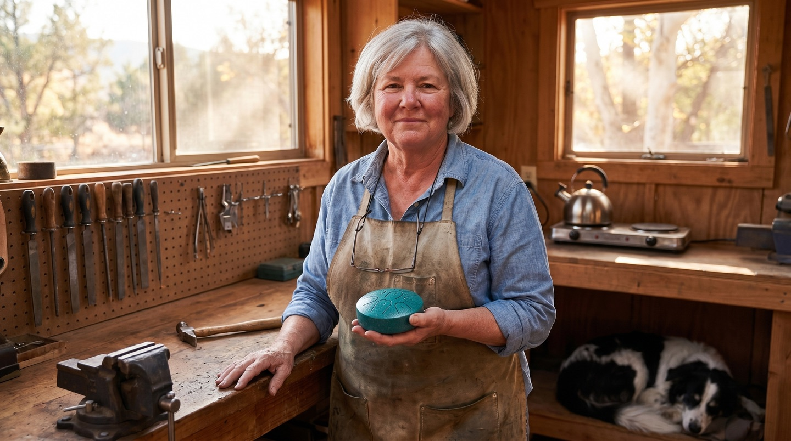
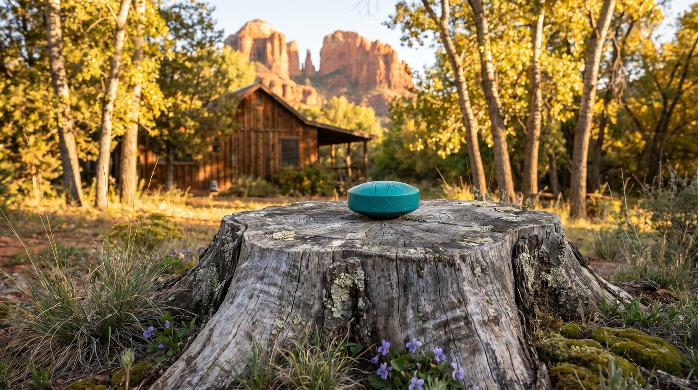
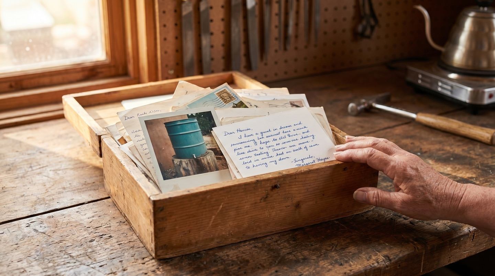
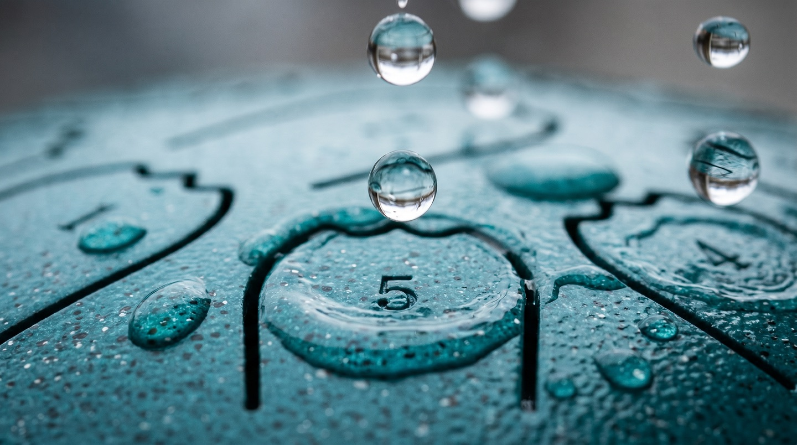
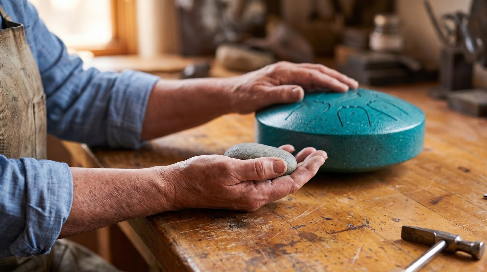

Issue No. 7 — Fall 2026
Stories about the small things that make ordinary days better
Advertisement
She Forgot a Piece of Steel Out in the Rain. Two Months Later, She Heard It Singing.
For ten years, a 64-year-old Sedona metal artist has made only one thing, an instrument no human plays. The batch on her bench right now is the last one her hands will ever tune.

"I have shaped steel for thirty years. The rain drum is the one piece I do not finish — the sky finishes it."
There's a sound you can only hear three miles south of Sedona, and only when it rains.
It comes from a tree stump behind a wooden cabin where Oak Creek bends west. When a storm rolls in, the stump starts to play music: clean, bright notes, one for every raindrop, with nobody touching it.
The woman who made it is Margaret Hayes. She's 64 and has worked a steel forge on the side of that cabin since 1991: gates, weather vanes, copper birdbaths, garden sculptures. For the last ten years she has made only this.
She doesn't play them. She tunes them, sets them outside and lets the sky do the rest.
Right now there's one final batch on her bench. When it's gone, she's done. Her hands have made that decision for her.
But to understand why people write to her years later, you have to go back to the afternoon she walked out of the forge and heard steel singing in the rain.
The Sculpture She Forgot to Bring Inside
It was the middle of an October storm in 2015. Margaret was at the anvil when she heard a sound she didn't recognise coming from the yard. It wasn't wind, and it wasn't a gutter. It was music.
She put the hammer down and walked outside.
On the tree stump behind the forge sat a flat steel disc she'd cut two months earlier: five tongues, a wind catcher commissioned for a customer's garden gate. It hadn't caught the wind the way she wanted. In August she'd set it on the stump to think about it, and then forgot it was there.
The rain had found it. Every drop that hit a tongue rang out as a clear, pitched note. Five notes, all clean. The rain was playing her sculpture.

The tree stump in Margaret's back garden, the spot where she first heard the rain play steel.
"I had been making things that stood in gardens for twenty-five years. None of them had ever made a sound. The one I forgot on the tree stump made music. I went back into the forge that afternoon and started cutting the next one."
By November she had finished her first true rain drum: nine tongues, tuned to the pentatonic scale, set on the same stump. It's still there. By 2017, her forge made nothing else.
So what does it actually sound like when the weather plays one?
What You'll Hear From Your Window
Forget wind chimes. A wind chime is noise. This is closer to a song.
Each raindrop sounds a single, clean note. Because the nine tongues are tuned to the pentatonic scale, there's no such thing as a wrong note. A drop on the F-tongue rings F. A drop on the C-tongue rings C. Whatever the sky sends, it comes out in harmony.
Every kind of weather plays it differently:
- A light rain gives three or four notes a minute, with long, soft silences between, like someone thinking out loud.
- A steady rain gives fifteen or twenty notes a minute that never trip over each other.
- A thunderstorm sets its own rhythm, and the drum plays the notes.
On the tree stump — tap to hear the rain play it.
On the garden table — tap to listen.
"A piano is played by a person. A rain drum is played by the weather. I never met a player as patient as a Sedona afternoon storm."
Margaret's own drum has sat on that stump for ten years and has never once come inside. When the clouds roll in, she makes a cup of tea, sits at the kitchen window and waits.
Picture that at your own window. Grey afternoons used to be something to get through. Now there's something you look forward to.
"When the clouds come in, she sits at the kitchen window with a cup of tea, and waits."
Margaret isn't the only one waiting by the window. She has a box full of proof.
The Wooden Box on the Shelf Above the Bench
Above Margaret's tuning bench sits a plain wooden box. Inside are a few hundred letters: cards, short notes, pages torn from notebooks, the odd Polaroid. Every one is from someone whose drum the rain has played.
"I don't go through them often," she said. "Every now and then, when I am stuck on a tongue I can't seem to file right, I open it."
She took the box down and pulled out three.

A few hundred letters in a wooden box on the shelf above the tuning bench.
The first was from Helen, in Brattleboro, Vermont. Last March she set her drum on a tree stump in the corner of her back garden. Two weeks later the first spring rain came. Helen texted her granddaughter from the kitchen window, then printed a screenshot of the text, taped it inside a card and mailed it to Margaret. It said: "The garden is playing music."
"That one I keep on top of the stack," Margaret said.
The second was from Marcus, 47, in Brooklyn. His drum lives on the third-floor balcony of his walk-up. He wrote about the first summer thunderstorm to catch it: late at night, half an inch of rain in twenty minutes. He opened the balcony door and stood barefoot in the doorway for the whole storm.
"He wrote me that it sounded like the building was being tuned from above. I have never been to Brooklyn. I picture his building every time it rains."
The third was a folded card from Carol, on a screened porch in Georgia. She'd set her drum on the wide arm of a rocking chair and never moved it. The card held one sentence, in blue ballpoint pen:
"It is the only thing in my yard that gets better when the sky turns dark."
Margaret laid the three cards back in the box and slid it onto the shelf.
"That last one I think about when I am tuning," she said. "You can build a thing for thirty years and not have anyone say it back to you that clean."
Why a Factory Drum Can't Do This

A single raindrop produces a single note. Pentatonic tuning means it cannot land wrong.
You can find stamped steel "rain drums" on Amazon. Here are the five things Margaret does that a factory doesn't, and what each one means for you.
1. The Pentatonic Promise: no wrong note, ever.
All nine notes sit in the pentatonic scale, so every drop works with every other. What it means for you: it sounds lovely in a drizzle and in a downpour. Without this, it's just steel with rain on it.
2. The 432Hz Calibration: a softer, warmer tone.
Margaret tunes every drum to A=432Hz instead of the standard 440Hz. That's eight cycles lower, the tuning many singing-bowl makers prefer. What it means for you: a gentler ring that suits a quiet garden rather than cutting through it.
3. Weather-Hardened Steel: it lives outside.
Powder-coated carbon steel, finished against rust and UV. What it means for you: set it out once and leave it there. Margaret's own has lived on the same stump for ten years.
4. The Oak Creek Anchor: tested by her own hand, one drum at a time.
Before any drum leaves the bench, Margaret checks its tuning against a small grey river stone she keeps in her apron pocket. She picked it up on a walk along Oak Creek in 2021, and it rings a quarter-tone between F and F-sharp. What it means for you: the drum you receive has been in her hands.
5. The Folded Note: one sentence, written for your drum.
Tucked in each cloth pouch is a handwritten note from Margaret, one sentence she chose for that drum on the day she finished it. What it means for you: a gift that arrives with a story already inside it.
Why There Won't Be Another Batch
By spring 2025, Margaret's hands had started telling her something she'd been trying not to hear.
The finest part of the work is filing each tongue to the millimetre until it rings true, and her hands could no longer hold steady for it. Some mornings they still could. Most mornings they couldn't.
"You can teach a hand to forge a gate. You can't teach a hand to tune one. Mine is done with the fine work."

Margaret's final tuning check: the small grey Oak Creek river stone she has kept in her apron pocket since 2021.
So this batch, the one on her bench right now, is the last. She has tuned every drum in it herself. When it's gone, she puts the tuning hammer down for good.
A hand-tuned steel rain drum from a luthier costs four hundred dollars and up. Margaret is selling her final run at cost.
Two collectors from Phoenix asked to buy the batch. A wholesale buyer from Scottsdale asked too. She said no to all three.
"I don't need the money. I need them to be played by the weather. A drum that sits on a collector's shelf is a closed door."
She wants them in gardens, on porches and on balcony rails. She wants them where the rain can reach.
Once this batch is gone, there won't be another drum tuned by Margaret's hands.
While the last batch remains:
Check AvailabilityThe last hand-tuned rain drums from Margaret's forge, while they remain.
What They Wrote Margaret After Their First Storm
Here's what happened when the first rain came for three of her customers.
★★★★★
"I set it on a stump in the backyard the day it arrived. Three days later we had a real Colorado afternoon storm. Every note was actual music. I sat at the kitchen window with my husband for forty minutes and we did not talk."
★★★★★
"We get a lot of rain in Portland. The drum sits on the railing of the back deck year-round. The grey afternoons used to be the worst part of the year. They are now my favorite."
★★★★★
"I sent one to my mother in the Smokies. She set it on the front porch and told me she now waits for the rain the way you wait for a friend who is always late but always worth it."
Three Honest Questions Before You Order
"Where do I put it, and won't it rust?"
Anywhere the rain can reach: a tree stump, a garden bench, a porch railing, a balcony rail. It's powder-coated carbon steel made to live outdoors all year. Margaret's own has stayed on the same stump for ten years. Most owners never bring it inside.
"What if we hardly get any rain?"
Pour a watering can slowly from about two feet above it and you'll get a proper little shower of notes. That's exactly how Margaret tests every drum. A garden hose held just above the surface works too.
"What if I don't love it?"
You have 30 days to send it back for a full refund, no questions asked. Just email the support team and they'll sort it out.
The Next Time It Rains
Think about the next grey afternoon at your house.
You can spend it the way you always have, waiting for it to pass. Or you can make a cup of tea, sit by the window and listen to your garden play music, the way Helen did, and Carol, and Margaret herself.
The final run is on her bench right now, and when it's gone, it's gone.
Hand-tuned by Margaret in Sedona. Sealed in a cloth pouch with her handwritten note.